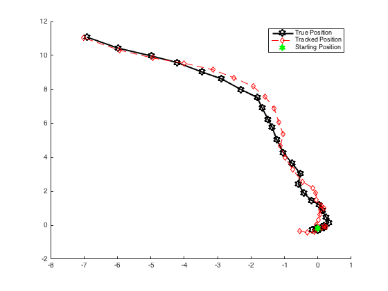

Description
Models the position and velocity of an object whose position is known under noise by a latent variables distribution that is linear-Gaussian
Contents
Generate synthetic data
observationLength = 30; % State transition matrix. A = [1 0 1 0; ... % constant velocity in the x1 direction per unit of time 0 1 0 1; ... % constant velocity in the x2 direction per unit of time 0 0 1 0; ... 0 0 0 1]; % Observation matrix, velocity is unobserved C = [1 0 0 0; 0 1 0 0]; q = 0.1; % random accelerations as changes in velocity term r = 0.5; % observation model variance (sensor error) [obsDim, hiddenDim] = size(C); mu_0 = [0 0 1 0]'; % initialization state for initial state distr. V_0 = 5*eye(hiddenDim); % intial covariance for starting position Z = zeros(hiddenDim, observationLength); % true state (position and velocity) X = zeros(obsDim, observationLength); % observable state (position only) eps = normrnd(0, q, [hiddenDim observationLength]); del = normrnd(0, r, [obsDim observationLength]); Z(:,1) = zeros(hiddenDim,1); % true position as latent variable X(:,1) = C*Z(:,1) + del(:,1); % observed for t = 2:observationLength Z(:, t) = A*Z(:, t-1) + eps(:, t); X(:, t) = C*Z(:, t) + del(:, t); end options_kalman = []; options_kalman.A = A; options_kalman.C = C; options_kalman.mu_init = [0 0 1 0]'; options_kalman.V_init = 5*eye(hiddenDim); options_kalman.G = q*eye(hiddenDim); options_kalman.S = r*eye(obsDim);
Train model
model = ml_unsupervised_LGSSM(X, options_kalman);
Run forwards-backwards algorithm for LG-SSM
mu_init = [0 0 1 0]'; V_init = 5*eye(hiddenDim); [mu, V] = model.KalmanFilter(X); [mu_hat, V_hat] = model.KalmanSmoothing(mu, V); % Plot results figure; hold on plot(Z(1,2:end), Z(2,2:end), '-kh', ... 'LineWidth',2, ... 'MarkerSize',10)%, ... plot(mu_hat(1,:), mu_hat(2,:), '--rd') plot(Z(1,1), Z(2,2), 'gh','MarkerSize',10,'MarkerFaceColor','green') legend('True Position','Tracked Position','Starting Position')